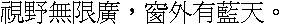

字样资料 / HITECH ADP3
MINGLI24 / HITECH ADP3 · 24×24
严格Big5基本汉字13,061/13,061；兼容汉字2另计。十、卅各有两种不同原字模；严格Big5汉字13,063个唯一Unicode、13,065个原变体。另7个CP950扩展汉字分列，不混入基本Big5覆盖。本预览及重绘入口使用的CFONT.24不含半角ASCII，未外补；相关Windows源MINGLI24.FON另有12×24半宽ASCII的128个原槽，本次不显示、不借入样图。 · 24×24 · 繁体
放大观察 · 3×

原尺寸 · 1×
来源与字样信息
- 家族
- HITECH ADP3
- 排版说明
- 按原24×24字框等宽排成固定预览，24px字进是本预览排版，不代表已核实的软件运行时字进。原库标点保留；1×为288×24，4×为1152×96严格整数复制。无裁框、补画、借字或外补ASCII。
- 字符框
- 24×24 px
- 字符范围
- 繁体
- 样本文字
- 視野無限廣，窗外有藍天。
- 覆盖说明
- 严格Big5基本汉字13,061/13,061；兼容汉字2另计。十、卅各有两种不同原字模；严格Big5汉字13,063个唯一Unicode、13,065个原变体。另7个CP950扩展汉字分列，不混入基本Big5覆盖。本预览及重绘入口使用的CFONT.24不含半角ASCII，未外补；相关Windows源MINGLI24.FON另有12×24半宽ASCII的128个原槽，本次不显示、不借入样图。
- 缺字
- 样文无缺字
- 样张类型
- Windows 3.1繁体MINGLI24与ADP for Windows 3.1.05配套CFONT.24的共同原码字模相同，合并展示；固定预览仍读取CFONT.24，不是设备ROM提取。
- 风格
- 未分类
- 用途
- 历史屏幕字库
- 字形来源
- ADP for Windows 3.1.05（2003）配套CFONT.24，直接读取24×24预存1-bit字模；原程序Big5寻址、72字节读取和Windows单色CreateBitmap路径已静态核验。1995-08-30仅为保存的字体文件时间，不是认证设计年份；不称设备ROM或已证手绘设计。 另核Windows 3.1繁体3.10.151保存件MINGLI24.FON：13,494个共同Big5原码的完整72字节仅反相后，与CFONT.24逐字节全同，含13,065个原汉字变体、13,063个唯一汉字及十／卅全部别名。因此合并为同一24×24字体的两处保存来源，不新增第二款。Windows成员目录记录1993-05-02，为更早保存记录，不认证设计年；第三方保存不等于微软原盘认证，不推断复制方向或设计者。
- 授权状态
- 未确认开放再分发授权
- 许可说明
- 保存来源、散列核验和原程序证据不等于开放再分发许可。仅提供固定小样、必要事实及无字模离线重绘方法，不公开原包、完整字体、程序、字模数组或字库子集。
- 说明
- 合并的MINGLI24同原格来源关系另列；以下为其他已核参考的有边界比较。原250条记录的全共同汉字比较，最高大交集为CMEX明24：13,061共同汉字中3字精确相同、平均±1px Dice为0.659583。针对当前247目录的45个缺口，补查可恢复原件、条件映射、原槽高相似形状池与有限样字，已核范围未见整层高度重复。仍有12项原源或布局未闭合、ChinaSea仅参考图；固定预览仅18个有限警报层（13项有renderer依据、5项仅元数据约束），不能当作全字库比较。另核可恢复已排除来源，不改变排除决定。结论不证明穷尽、原创或逐字手绘。
- 获取方式
自行取得有权处理且SHA匹配的本地源文件；工具只离线重绘批准固定样文的1×或4×PNG，不联网、不执行旧程序、不导出任意文字或完整字体。
- 来源
- HITECH HMI软件保存介绍页
- 原生证据
说明：原文件、原程序读取与单色绘制路径、全原槽及固定样图由独立实现核验。
source_sha256：1f46c0240a1a840f944baed0627c734351672c0dd388528313c9421d6a957121
sourceBytes：976680
bitDepth：1
big5Han：13061
big5ExpectedHan：13061
compatibilityHan：2
printableAscii：0
physicalSlots：13565
cp950ExtensionHan：7
big5SourceHanVariants：13065
relatedSource：name：Windows 3.1 Traditional Chinese 3.10.151 / MINGLI24.FON；sourceUrl：https://archive.org/details/windows-3.1-traditional-chinese；sourceBytes：998448；sourceSha256：813b175212ff8cf5fe2d43d85332ca6589a325f2cdcf7dc5e339a7f19a89fe1f；compressedSourceBytes：798054；compressedSourceSha256：ee1ec86e14602eaa939505877e9697a23469c398eaabc98ebc03ca95b61775d0；preservedMemberDate：1993-05-02；commonBig5SourceCodes：13494；exactInvertedCells：13494；hanSourceVariants：13065；uniqueHan：13063；comparison：Full 72-byte source cells after bit inversion only; no crop, shift or rescaling; aliases retained；scope：Same common-code glyphs, not identical file coverage; no copying direction, designer or design-date attribution；asciiCellWidth：12；asciiCellHeight：24；asciiPhysicalSlots：128；asciiShownInPreview：False
查看原生设计来源
字体使用与再分发按原来源许可执行。